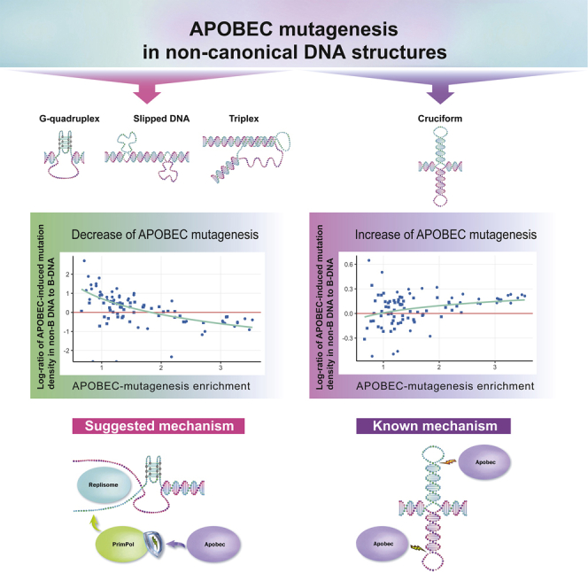
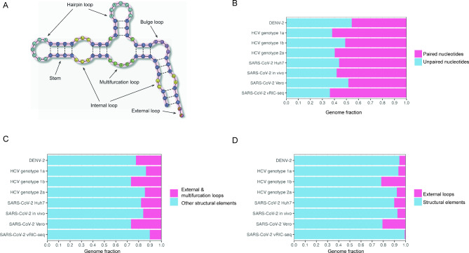
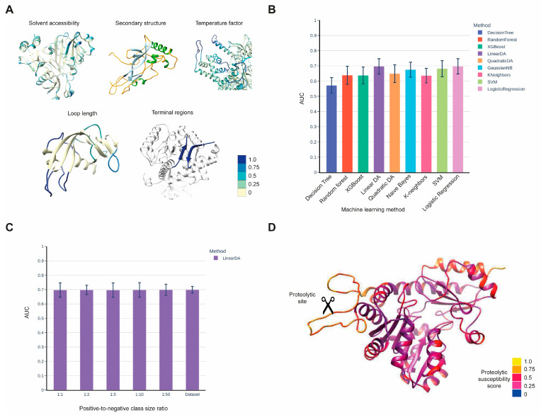
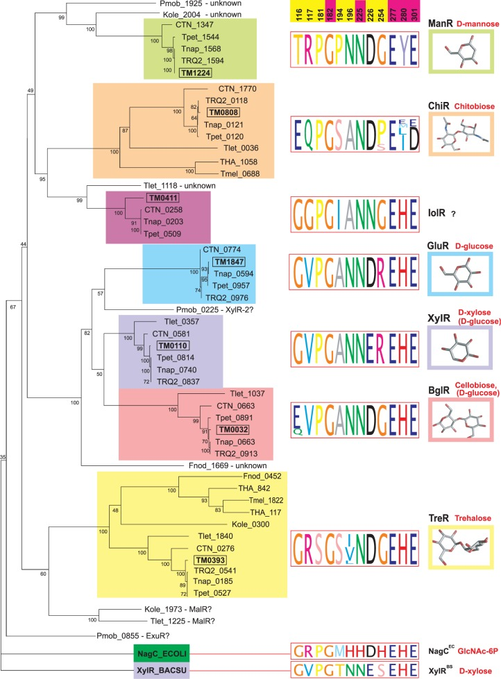

Mutational Processes in Human Cancer

A primary research focus of the lab is to investigate the nature of human cancer by deciphering mutational patterns caused by different mutational processes. Recent advances in DNA sequencing allowed us to obtain nucleotide sequences of whole cancer genomes for different cancer types and create a comprehensive map of mutational signatures. The generation of such mutagenesis maps allows us to examine a whole spectrum of somatic mutations, understand the underlying mutational processes, and contribute to the search of cancer-associated genes.
A major focus is on the APOBEC family enzymes — an important component of the human innate immune system that contributes strongly to the mutational load in cancer. Using motif-centered analysis of whole-genome mutation catalogs, we revealed previously unknown epigenomic features of APOBEC mutagenesis and have extended this approach to other kinds of mutagenesis in human cancers.
Selected publications
- Ponomarev GV, Fatykhov B, Nazarov VA, Abasov R, Shvarov E, Landik N-V, Denisova AA, Chervova AA, Gelfand MS, Kazanov MD. APOBEC mutagenesis is low in most types of non-B DNA structures, unlike other types of cancer mutagenesis. iScience 25(7):104535, 2022.
- Chervova A, Fatykhov B, Koblov A, Shvarov E, Preobrazhenskaya J, Vinogradov D, Ponomarev GV, Gelfand MS, Kazanov MD. Analysis of gene expression and mutation data points on contribution of transcription to the mutagenesis by APOBEC enzymes. NAR Cancer 3(3):zcab025, 2021.
- Kazanov MD, Roberts SA, Polak P, Stamatoyannopoulos J, Klimczak LJ, Gordenin DA, Sunyaev SR. APOBEC-induced cancer mutations are uniquely enriched in early-replicating, gene-dense, and active chromatin regions. Cell Reports 13(6):1103–1109, 2015.
Host–Virus Interactions

A growing area of our research focuses on host–virus interactions, combining transcriptomic and genomic analyses with structural and sequence-based computational approaches. Our recent studies are centered on mpox virus (MPXV), where we investigate how the human innate immune system — in particular APOBEC3 enzymes — shapes the viral genome and transcriptome. We also develop computational tools for the systematic analysis of RNA secondary structure in viral genomes.
Selected publications
- Lyskova AO, Abasov RKh, Pavlova A, Matveev EV, Madorskaya AV, Kazanov FM, Garshina DV, Smolnikova AE, Ponomarev GV, Sharova EI, Ivankov DN, Adebali O, Gelfand MS, Kazanov MD. MPXV RNA-seq Data Provide Evidence for Protection of Viral Transcripts from APOBEC3 Editing. Journal of Virology, 2026.
- Madorskaya AV, Kazanov FM, Ponomarev GV, Smolnikova A, Garshina D, Matveev EV, Abasov RKh, Ivankov DN, Gelfand MS, Kazanov MD. Comment on "Inverted repeats in the monkeypox virus genome are hot spots for mutation". bioRxiv 2025.08.19.670320, 2025.
- Kazanov FM, Matveev EV, Ponomarev GV, Ivankov DN, Kazanov MD. Analysis of the abundance and diversity of RNA secondary structure elements in RNA viruses using the RNAsselem Python package. Sci Rep. 14(1):28587, 2024.
Proteases in Cancer: Bioinformatics Methods for the Identification of Protease Substrates

Another field of research devoted to cancer and protein–peptide interactions is the investigation of mechanisms of recognition between proteases and their substrates and its implications for the development of bioinformatics methods for the prediction of protease substrates. Different types of cancer show increased activity of various proteases and decreased activity of their natural inhibitors. Identification and studying these altered interactions provides a handle for the design of agents for blocking tumor invasion and metastasis. Development of bioinformatics methods for predicting protease substrates can substantially reduce the amount of required experimental efforts.
Selected publications
- Matveev EV, Safronov VV, Ponomarev GV, Kazanov MD. Predicting Structural Susceptibility of Proteins to Proteolytic Processing. Int. J. Mol. Sci. 24, 10761, 2023.
- Belushkin AA, Vinogradov DV, Gelfand MS, Osterman AL, Cieplak P, Kazanov MD. Sequence-derived structural features driving proteolytic processing. Proteomics 14(1):42–50, 2014.
- Kazanov MD, Igarashi Y, Eroshkin AM, Cieplak P, Ratnikov B, Zhang Y, Li Z, Godzik A, Osterman AL, Smith JW. Structural determinants of limited proteolysis. Journal of Proteome Research 10(8):3642–3651, 2011.
Genomics of Commensal and Pathogenic Bacteria

The lab applies computational methods to study the genomics of bacteria comprising the human microbiome and multi-drug resistant pathogenic bacteria. In several projects devoted to these topics in collaboration with Prof. Andrei Osterman and Prof. Dmitry Rodionov (Sanford-Burnham Medical Research Institute, USA), we studied bacterial metabolism by reconstructing the regulatory networks. In projects in collaboration with the research groups from Dmitry Rogachev National Medical Research Center of Pediatric Hematology, Oncology, and Immunology, we performed genomic analysis of the antimicrobial resistance and virulence determinants of clinical isolates from immunocompromised pediatric patients.
Selected publications
- Arzamasov AA, Rodionov DA, Hibberd MC, Guruge JL, Kent JE, Kazanov MD, Leyn SA et al. Integrative genomic reconstruction reveals heterogeneity in carbohydrate utilization across human gut bifidobacteria. Nat Microbiol. 10(8):2031–2047, 2025.
- Kazanov MD, Li X, Gelfand MS, Osterman AL, Rodionov DA. Functional diversification of ROK-family transcriptional regulators of sugar catabolism in the Thermotogae phylum. Nucleic Acids Research 41(2):790–803, 2013.
- Sun EI, Leyn SA, Kazanov MD, Saier MH Jr, Novichkov PS, Rodionov DA. Comparative genomics of metabolic capacities of regulons controlled by cis-regulatory RNA motifs in bacteria. BMC Genomics 14:597, 2013.
- Rodionov DA, Novichkov PS, Stavrovskaya ED, Rodionova IA, Li X, Kazanov MD et al. Comparative genomic reconstruction of transcriptional networks controlling central metabolism in the Shewanella genus. BMC Genomics 12 Suppl 1:S3, 2011.
Machine Learning Applied to Biological Sequence Analysis
A recurring theme across several projects is the application of machine learning methods to predict biologically relevant properties directly from protein sequences and structures. Working with large experimental datasets of protease cleavage events, we developed supervised learning models that capture structural and physico-chemical determinants of limited proteolysis and of structural susceptibility to proteolytic processing. These studies demonstrate how statistical learning can extract generalizable rules from high-throughput biochemical data and translate them into predictive tools applicable to genome-scale sequence analysis.
Selected publications
- Matveev EV, Safronov VV, Ponomarev GV, Kazanov MD. Predicting Structural Susceptibility of Proteins to Proteolytic Processing. Int. J. Mol. Sci. 24, 10761, 2023.
- Kazanov MD, Igarashi Y, Eroshkin AM, Cieplak P, Ratnikov B, Zhang Y, Li Z, Godzik A, Osterman AL, Smith JW. Structural determinants of limited proteolysis. Journal of Proteome Research 10(8):3642–3651, 2011.